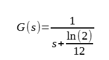

How Politics Makes People Blind
Politics is hard to discuss. That is partly because politics makes
people live in the world of alternative facts. That is, politics blinds
us to reality.
To understand what I am saying, imagine yourself talking to a Neo-Nazi. Neo-Nazis believe (just like Nazis did) that a significant percentage of deaths were caused by genetic defects and that eugenics would make the society so much healthier that it is worth the lack of freedom eugenics means. Neo-Nazis do not necessarily (though they probably do) have different values than we do, they live in a world of alternative, and empirically wrong, facts. In reality, only around 3% of deaths are caused by known hereditary genetic defects. Cancer is mostly caused by genetic modification you get after you were born in some of your cells (mostly not those related to reproduction), and those genetic modifications are caused by radiation, chemicals created by burning tobacco, chemicals created by a mixture of heme iron and omega-6-acids in presence of the enzymes existing in your colon, and so on. That is, not by things eugenics could save us from. Other cancers appear to be caused by malformed protein around your DNA turning off genes for reproduction control (similar to the Alzheimer's disease - protein malformation without apparent change in the DNA coding for those proteins), and this seems to be (although that is not proven beyond reasonable doubt) somehow associated with high blood sugar. Again, it is not clear how eugenics would help. Furthermore, there is an obvious fact that Neo-Nazis are loudly denying, and that is that governments that actually tried to do eugenics were not following the science when doing that, and were actually counter-productive: killing people of different ethnicities, with no evidence of genetic disease, arguably makes our gene pool less fit.
Or imagine yourself talking to a vegan extremist who thinks meat is responsible for a significant percentage of deaths. They may have the same values that you do, but they live in a world of alternative facts. It is relatively easy to estimate how many deaths are caused by meat. There are essentially two ways meat kills us: saturated fat causing heart disease, and heme iron (present only in red meat) mixed with omega-6-acids in presence of enzymes present in colon producing cancer-causing substances. It is widely agreed upon that around 17% of lethal heart disease is caused by saturated fat (but notice saturated fat is not found solely in animal products), and maybe around 7% of cancers are caused by heme iron. Since both cancer and heart disease are responsible for around 11% of deaths each, probably less than 3% of deaths are caused by meat. Furthermore, it is hard to imagine government telling people what to eat actually following the science. Vegan extremists, much like you, presumably value both freedom and public health. But they are misled into thinking giving up freedom to eat what we want will lead to huge public health benefits. Furthermore, if all we are worried about is the effects of meat on human health, are not there solutions more likely to work than forced veganism, such as advocating preventative use of statins? Although all the pandemics in recent history came from eating meat, I fail to see how making meat illegal might help about that: with the exception of Spanish Flu (which jumped from chickens to humans in a factory farm in Kansas), all the pandemics in recent history came from illegal wet markets where animals did not receive basic veterinary care (as it was, well, illegal). It being illegal to eat bats or monkeys, obviously, did not stop EBOLA and COVID-19 from jumping from bats to humans, nor did it stop HIV from jumping from monkeys to humans. In fact, it arguably made it more likely to happen: those animals receiving basic veterinary care would have prevented that. I am, obviously, not denying it is a serious problem, but I fail to see how government can solve it. It might be a good idea to ban preventative use of antibiotics in farmed animals to prevent a pandemic of superbacteria, though, and I have asked a question on an Internet forum about preventing superbacteria.
Anti-vegetarians are similarly mostly living in an alternative reality in which most meat comes from pasture-raised animals, that it contributes significantly to the amount of food we have, and that giving it up will probably lead to famine. That is also laughably wrong, but at least anti-vegetarians do not tend to be political, or at least not as authoritarian.
However, I think that even people who are holding normal political positions are just as misinformed, not by alternative media, but by mainstream media. Lest we forget that one of the basic principles of social sciences is to never doubt the statistics provided by the governments. Like Katherine Hirschfeld said: "Social scientists frequently cited favorable health statistics supplied by these regimes (Cuba...), without critically looking at the ways these were created and maintained by state power.". Here are some examples of commonly-held (by most people) beliefs related to politics, which I am quite sure are not based on good evidence:
Furthermore, what's getting normalized by the society has little to do with what actually makes sense. For instance, vegetarianism as a way to fight superbacteria is getting normalized: nobody would call you insane for being a vegetarian. But demanding that the eggs you eat are antibiotic-free, or avoiding eating eggs altogether, which empirically makes far more sense than being a vegetarian (as around 70% of antibiotics are used in the egg industry, and less than 5% is used in the beef industry) (UPDATE on 29/12/2025: OK, I don't know whether that statistic is accurate, but I think we can be pretty sure more than half of antibiotics go to the egg industry, since what is not controversial is that 45% of all antibiotics used today are ionophores. Ionophores are antibiotics effective in birds, but poisonous to mammals.), is considered weird.
Another way politics blinds people is by making everything a politically sensitive issue, which is therefore difficult to discuss and think about. For example, in the USA, the method with which to teach reading is being politicized. Phonics, the method used in most countries around the world (including Croatia), and which involves explicit teaching of letter-to-sound correspondences, is associated with the political right. Whole language theory, on the other hand, is a method which encourages guessing based on the context, is associated with the political left. Now, how it became a matter of politics rather than applied linguistics is anybody's guess. But what's not controversial is that politicis makes it difficult to be objective and honestly discuss those things. Or whether Ivermectin is safe and effective to treat COVID-19. Right-wing answer is yes, left-wing answer is no. Difficult to be objective and discuss that, right? And I think that one of the main reasons, if not the main reason, why the Krahe's methodology of studying toponyms is being shunned today by modern historical linguistics is political correctness towards Albanians. Krahe's methodology suggests Illyrian was a centum language. It is being ridiculed by modern historical linguistics, but basic information theory seems to strongly suggest we should follow the Krahe's methodology. It seems to give precise numbers in support of the Krahe's methodology, while giving no such numbers in support of the Mayer's methodology. Basic information theory, for example, seems to suggest that the p-value of this k-r pattern in the Croatian river names is somewhere between 1/300 and 1/17. And my guess is that it is being rejected for political reasons.
That is why you should not listen only to the mainstream media, but try to get a deeper insight into political issues. If you listen only to the mainstream media, you will be duped into believing false and sometimes even incoherent things. I hope I am helping you with getting a deeper insight into political issues.
UPDATE on 25/12/2022: I have written an essay specifically about the lessons I believe we should have learned from the COVID-19 pandemic.
To understand what I am saying, imagine yourself talking to a Neo-Nazi. Neo-Nazis believe (just like Nazis did) that a significant percentage of deaths were caused by genetic defects and that eugenics would make the society so much healthier that it is worth the lack of freedom eugenics means. Neo-Nazis do not necessarily (though they probably do) have different values than we do, they live in a world of alternative, and empirically wrong, facts. In reality, only around 3% of deaths are caused by known hereditary genetic defects. Cancer is mostly caused by genetic modification you get after you were born in some of your cells (mostly not those related to reproduction), and those genetic modifications are caused by radiation, chemicals created by burning tobacco, chemicals created by a mixture of heme iron and omega-6-acids in presence of the enzymes existing in your colon, and so on. That is, not by things eugenics could save us from. Other cancers appear to be caused by malformed protein around your DNA turning off genes for reproduction control (similar to the Alzheimer's disease - protein malformation without apparent change in the DNA coding for those proteins), and this seems to be (although that is not proven beyond reasonable doubt) somehow associated with high blood sugar. Again, it is not clear how eugenics would help. Furthermore, there is an obvious fact that Neo-Nazis are loudly denying, and that is that governments that actually tried to do eugenics were not following the science when doing that, and were actually counter-productive: killing people of different ethnicities, with no evidence of genetic disease, arguably makes our gene pool less fit.
Or imagine yourself talking to a vegan extremist who thinks meat is responsible for a significant percentage of deaths. They may have the same values that you do, but they live in a world of alternative facts. It is relatively easy to estimate how many deaths are caused by meat. There are essentially two ways meat kills us: saturated fat causing heart disease, and heme iron (present only in red meat) mixed with omega-6-acids in presence of enzymes present in colon producing cancer-causing substances. It is widely agreed upon that around 17% of lethal heart disease is caused by saturated fat (but notice saturated fat is not found solely in animal products), and maybe around 7% of cancers are caused by heme iron. Since both cancer and heart disease are responsible for around 11% of deaths each, probably less than 3% of deaths are caused by meat. Furthermore, it is hard to imagine government telling people what to eat actually following the science. Vegan extremists, much like you, presumably value both freedom and public health. But they are misled into thinking giving up freedom to eat what we want will lead to huge public health benefits. Furthermore, if all we are worried about is the effects of meat on human health, are not there solutions more likely to work than forced veganism, such as advocating preventative use of statins? Although all the pandemics in recent history came from eating meat, I fail to see how making meat illegal might help about that: with the exception of Spanish Flu (which jumped from chickens to humans in a factory farm in Kansas), all the pandemics in recent history came from illegal wet markets where animals did not receive basic veterinary care (as it was, well, illegal). It being illegal to eat bats or monkeys, obviously, did not stop EBOLA and COVID-19 from jumping from bats to humans, nor did it stop HIV from jumping from monkeys to humans. In fact, it arguably made it more likely to happen: those animals receiving basic veterinary care would have prevented that. I am, obviously, not denying it is a serious problem, but I fail to see how government can solve it. It might be a good idea to ban preventative use of antibiotics in farmed animals to prevent a pandemic of superbacteria, though, and I have asked a question on an Internet forum about preventing superbacteria.
Anti-vegetarians are similarly mostly living in an alternative reality in which most meat comes from pasture-raised animals, that it contributes significantly to the amount of food we have, and that giving it up will probably lead to famine. That is also laughably wrong, but at least anti-vegetarians do not tend to be political, or at least not as authoritarian.
However, I think that even people who are holding normal political positions are just as misinformed, not by alternative media, but by mainstream media. Lest we forget that one of the basic principles of social sciences is to never doubt the statistics provided by the governments. Like Katherine Hirschfeld said: "Social scientists frequently cited favorable health statistics supplied by these regimes (Cuba...), without critically looking at the ways these were created and maintained by state power.". Here are some examples of commonly-held (by most people) beliefs related to politics, which I am quite sure are not based on good evidence:
-
Prisons deter violent crime. Existence of prisons is giving up a
bit of freedom for a lot of safety.
Let's rephrase that a bit: "Countries with higher incarceration rate tend to be lower in crime."
Sorry, but the real-world data seems to be strongly against this belief. Country with the highest incarceration rate is the USA, and it is also a country relatively high in violent crime. It probably has higher homicide rate than Somalia, which is, in minds of many, a synonym for a high-crime country. The reasons this myth is not true, even though it may be instinctual to believe that, are actually easy to guess:- Some mentally ill people are not deterred from violent crime by the existence of prisons, but are actually provoked by it.
- Violent criminals are abused in prison by other prisoners, and leave the prison even more dangerous (with more psychological problems) than when they entered it.
- Putting petty-criminals into prisons produces the unintended learn from the best effect.
It is weird to me that almost everybody, left-wing or right-wing, who is not an anarchist, believes that. There does not seem to be any factual basis for that. Like, the policy of prisons has literally less factual basis than the policy of eugenics or forced veganism. There is a factual basis for eugenics: some diseases are caused by genes, and, if people having those diseases did not procreate, we would indeed get rid of them. There is a factual basis for forced veganism: meat, especially red meat, sometimes causes death, and the vast majority of pandemics do indeed start with meat. But there does not seem to be factual basis for the belief that many mentally ill people are deterred from doing crime by the existence of prisons.
What's also weird is that stating that you do not believe that government makes us safer actually leads to many upvotes on some rather politically neutral places on the Internet (completely unrelated to anarchism):

Makes you wonder whether people actually believe that government makes us safer, or whether it is, to use the phrase the Croatian president Zoran Milanović uses, a "North-Korean truth" (something everybody pretends to believe; He was referring to the idea that banning funerals during the COVID-19 pandemic was a good idea, that's a North-Korean truth according to him.). I have also asked a StackExchange question about how non-anarchists explain that incarceration rate seems to be positively correlated with violent crime, rather than negatively.
Another argument against the existence of prisons and other government policies supposed to deter violent crimes which I find compelling is the Carl Moody's argument: "If you are about to commit a mass shooting, there is a very good chance you will die in the process. Many mass shootings end with somebody fatally shooting the shooter. And mass shooters are aware of that. They are expecting, or even planning, to die in the process. If that does not deter them, what makes you think something a government can do will? How could, for example, a small penalty for illegally owning a gun deter somebody who is about to commit a mass shooting?". -
Animal rights are improving. Livestock is living longer and
happier lives.
Sorry, that's just laughably wrong. 100 years ago, cows used to live around 20 years, whereas now they live for 5 or 6 years. 100 years ago, chickens used to live for years, now they live for months. We can discuss the reasons. Careless breeding (which doesn't take care of how long the animals can live, only that they give milk and eggs), changes in the diet (leading to obesity preventing animals from living long lives)... All of that possibly being incentivized by government subsidies... In short, no, animal rights is not a self-solving problem. And lab-grown meat will not solve it, because it won't give us lab-grown eggs (and eggs are arguably causing more animal suffering and environmental problems than meat does: the vast majority of antibiotics these days is used in the egg industry). And I think the invention of antibiotics made animal rights much worse, by making cruel practices profitable. -
Shutting down all non-essential business during a pandemic makes
people stay home.
Sorry, but the real-world data does not quite support that idea. Deaths from traffic accidents increased in 2020 compared to 2019, rather than decreasing. Data from mobile phones tells a similar story. A pandemic is not just a germ, it is also a mass hysteria, and seemingly-nonsensible (in minds of the many) policies such as shutting down most business fuel that hysteria. You can perhaps claim lockdowns worked because people spent less time indoors, that those statistics are somehow misleading (that people were speeding while driving, offsetting the effect of there being fewer people on the road, that data from mobile phones is being misinterpreted...), but I see no reason to think those more-complicated explanations are true. Most of the people, realizing there is a pandemic, will respond by staying home. However, a significant percentage of people will panic and react very inappropriately, and it seems as though government policies tend to increase that percentage, rather than decreasing it. -
Non-pharmaceutical interventions during a pandemic, such as
lockdowns and mandatory mask wearing, are effective at leading to
fewer people dying from the pandemic.
While there are indeed exceptions, such as Australia having strong lockdowns and low deaths from COVID-19, or Florida having little non-pharmaceutical interventions and having high number of people dying from COVID-19 compared to other US states, non-pharmaceutical interventions are generally associated with higher deaths from COVID-19, rather than lower. Peru had one of the strictest (if not the strictest) lockdowns in the world, yet it also had the highest number of deaths from COVID-19 in the world. This is especially visible in Europe. Scandianvian countries such as Sweden generally responded to pandemic by ignoring it, and they had the lowest excess mortality in 2020: Sweden had excess mortality of 1.5%, and other Scandinavian countries mostly had negative excess mortality. On the other hand, other European countries had significantly higher excess mortality (Croatia had 17% excess mortality, significantly higher than the US, which has 11% excess mortality), in spite of trying all kinds of non-pharmaceutical interventions (UPDATE: For a reason that escapes me, various sources give me different results for excess mortality in 2020 in various countries. However, it does appear to be a rule that the number for Croatia is slightly bigger than the number for the US, and that both are significantly bigger than the number for Sweden. I have linked to some sources about it on the righ-hand aside of my blog-post defending the "let it rip" strategy of dealing with pandemics.).
People who are not anarchists generally respond by saying something along the lines of "Well, this is like saying statin causes high cholesterol because people who took statins had high cholesterol. Countries that used lockdowns had higher rates of COVID-19 to begin with. You need to adjust for other factors.". The problem with that response is that adjusting for other factors, if anything, makes it look more like non-pharmaceutical interventions are counter-productive, rather than less:- You need to adjust for life-expectancy, as COVID-19 almost exclusively kills the elderly, so countries with more elderly people will naturally have higher mortality from COVID-19. Once again, just eye-balling the data makes it obvious this is not true: Scandinavian countries have significantly higher life expectancy than Eastern European countries (that were hit by the pandemic the most).
- You need to adjust for the rates of type-2-diabetes, since type-2-diabetes makes COVID-19 far more deadly, and the rates of type-2-diabetes vary widely between countries. Once again, just eye-balling the data makes it obvious this is not true: Sudan, the country with the highest rate of type-2-diabetes, had very few deaths from COVID-19. And the same goes for Papua New Guinea. And, when you think about it, it actually makes sense. Suppose everybody in some country has type-2-diabetes, that makes COVID-19 deadly. In that country, who would be those people spreading COVID without realizing they are infected? Almost nobody, right? Which is presumably why COVID-19 did not spread as much in countries most plagued by type-2-diabetes, that are Sudan and Papua New Guinea. Slightly decreasing type-2-diabetes in Sudan or Papua New Guinea would obviously lead to more COVID-19 deaths, rather than less (but probably not more overall mortality). Relationship between rates of type-2-diabetes and COVID-19 deaths is obviously a Laffer Curve it is hard to tell where the peak is and whether we are on the left of that peak or on the right of that peak.
- You need to adjust for the distance from the equator, countries closer to the equator will naturally have lower COVID-19 deaths because of the sun killing the virus. Once again, just eye-balling the data makes it obvious this is not the case: Scandinavian countries, which had the lowest excess mortality, are the most distant from the equator of all Europe. Peru is also close to the equator.
I don't doubt you can manipulate the data to find a statistically significant (p-value less than 5%) negative correlation between non-pharmaceutical interventions and COVID-19 mortality, but doing that is not science. In science, when the data does not match your prediction, you modify your theory. You do not make dozens of new hypotheses based on that theory, and, when one of those hypotheses appears to predict the data significantly better than chance (and, for 20 hypotheses, one of them probably will by chance alone), claim that the theory is indeed true.
Some ways non-pharmaceutical interventions can end up being counter-productive include:- Lockdowns fueling the hysteria (people buying unreasonable amounts of everyday products leading to shortages and more crowded stores) and the protests. While, in some places, such as in New York, lockdowns were indeed correlated with lower mortality from traffic accidents and lower data about movement from mobile phones, and deaths from COVID-19 peaked around three weeks after the beginning of a lockdown (and COVID-19 mostly kills around three weeks after the infection), this is an exception, rather than a rule. In Australia, for example, lockdowns were not associated with lower mobile phone data about movement. In Delaware, for example, deaths peaked one week after the beginning of a lockdown, strongly suggesting actual infection rates started falling somewhere around two weeks before the lockdown. Clearly, lockdowns have little effect on how people are behaving (in fact, they seem to have a negative effect), much less on the virus.
- Consider what dr. Anthony Fauci said at the beginning of the pandemic, before changing his stance (arguably for political, rather than scientific, reasons): "Masks, while they do provide some protection, they do not provide the protection people think they provide. And considering that people who are not trained to wear masks tend to often touch their masks if wearing them, and thus contaminating them, masks may even be counter-productive.". And, indeed, with the exception of Italy (where it may very well be a coincidence) and Israel (but apparently only the first mask mandate there, strongly suggesting it is a coincidence - the third mask mandate was followed by an obvious speed-up of the pandemic), mask mandates were not followed by an obvious slowing-down of the pandemic.
Clearly, we relied on policies misled by simplistic computer models making ridiculous assumptions about both natural (most of the models assumed asymptomatic people were as likely to spread COVID-19 a symptomatic ones, which is clearly wrong as symptomatic people emit a lot more droplets) and social sciences. This should be viewed as Lysenkoism that just happened to be not as damaging. But almost nobody wants to admit that. -
Forced vaccinations against COVID-19 protect the
immuno-compromised for whom vaccines do not work, because
vaccinated are a lot less likely to spread COVID-19.
Sorry, the data seems to be strongly against this. Countries with higher vaccination rate mostly have more COVID-19 cases, rather than less (Chile, Israel...). While vaccines do indeed decrease the spread of COVID-19 by around 45%, and provide some small protection (maybe 13%, if the Israeli data, from the country which massively tests both the vaccinated and the unvaccinated, is anything to judge by) against infection, those protections are more than offset by the changes in behavior. Most people vaccinated against COVID-19 do not realize they are only slightly less likely to spread COVID-19 (I would wager most people think vaccines provide 5 to 10 times the protection against spreading, rather than barely around 2 times), and are behaving as if they cannot spread it. To put it another way: organizing massive celebrations to be attended by vaccinated (as all highly-vaccinated countries have been doing) will get more people vaccinated, but it will put the immuno-compromised for which vaccines do not work in greater danger. If you want to protect others, sure, getting vaccinated is a good idea. Wearing a mask is a good idea if done properly. But, most importantly, avoid superspreader events. That is far more important than getting vaccinated (if you are worried primarily about others), yet alone wearing a mask.
Makes you wonder whether there is some truth to anti-vaxxers saying "If Jews were claimed to be the spreaders of typhus in the Third Reich, then the unvaccinated are claimed to be the spreaders of COVID today.", right? I mean, equating people with an infectious disease does not always lead to something much worse. After all, homosexuals were equated with an infectious disease during the HIV pandemic, and it did not lead to a Holocaust-like genocide of homosexuals. But it obviously can lead to something much worse.
The thing is, when discussing political issues, we need to be precise. When we say "Vaccines and natural immunity reduce the probability of infection and lower the transmission.", do we mean "Vaccines lower transmission by around 45% and they decrease the probability of infection perhaps by around 13%. And natural immunity is even worse than that. Those are effects that are easily outweighed by changes in behaviour."? Or do we mean "It would be a good idea, at the beginning of the COVID-19 pandemic, to allow only the people who survived COVID-19 to continue working in nursing homes." (which is what Sunetra Gupta was basically saying, and it would make sense if natural immunity significantly lowered the spread)? Or perhaps we mean, almost equivalently, "Vaccine passports can protect immunocompromised people."? If natural immunity and vaccines lowered the spread 10 times, then Sunetra Gupta's suggestion about relying on natural immunity to protect people in nursing homes and the suggestion that vaccine passports could help the immunocompromised both make sense. If they lower the spread 2 times, as the empirical data shows, then those proposals are gibberish, and vaccine passports do little except that they set the dangerous precedent of equating people with infectious diseases. When we say "Masks work.", do we mean "Surgical masks, if worn properly (changed every 15 minutes...), perhaps provide around 18% protection from COVID-19." (as the raw data from the Danish Study appears to suggest)? Or do we mean "A cloth mask will protect me as good as any vaccine." (which would perhaps justify mask mandates)? Those are very different things, and have very different implications, even though they sound similar.
UPDATE on 04/02/2025: Another example of where precision is important in politics: When we say "Grass-fed cows emit more methane than grain-fed cows.", do we mean "Grass-fed cows emit 300% as much methane per a litre of milk than grain-fed cows." (as some simplistic calculations, which assume that cow's methane emissions are proportional to its cellulose intake, suggest), or do we mean "Grass-fed cows emit 20% more methane per a litre of milk than grain-fed cows." (as the peer-reviewed studies, that take into account the fact that cows also emit some methane while digesting starch and the fact that pastures contain aerobic methanotrophic bacteria, suggest)? There could be quite a difference in what's acceptable in fighting superbacteria. And in case you think the empirical data strongly supports the simplistic calculations (that there is a good reason to think our methane emissions reached their peak in 1980s, the time with the most grass-fed cows around the world), make sure you have read my factory farming counter-apologetics. -
Australia-style hotel quarantines are effective.
They aren't. People who work at those hotel quarantines get infected all the time. That's presumably because COVID-19 is, although it is mostly spread by droplets, also capable of airborne spread, and those hotels are not well-ventilated. And, like I have said in my previous point, it matters relatively little whether or not you are vaccinated when it comes to spreading COVID-19. In fact, statistics suggest that no less than one in seven infected travellers in Australia caused an outbreak. Thanks to the left-wing Australian blogger thejuicemedia for informing me of this. Maybe some high-tech quarantines would be effective, it's hard to tell. But quarantines such as those in Australia are not. And the quarantines in Ragusan Republic we learn in school about as if they were ahead of their time were almost certainly ineffective. -
Vaccine hesitancy will likely lead to emergence of
vaccine-resistant variants of COVID-19, evolving in unvaccinated.
That justifies forced vaccination against COVID-19.
Sorry, that is just nonsense, for two reasons:- Viruses that have the ability to shut down the immune system before it has a chance to act (as to be resistant to vaccination) are incredibly rare. As far as I know, there are only three of them: HIV, SIV (a virus closely related to HIV existing in monkeys) and Marek's Disease (a cancer-causing virus in chicken, distantly related to the chickenpox virus).
-
Even if there is a simple mutation to COVID-19 which would
enable it to shut down the immune system before it has a chance
to act (which is, again, incredibly unlikely), everybody being
vaccinated would select for the strains with that
mutation, rather than against strains with that mutation.
Which is what happened with the Marek's Disease in chicken: it
has evolved the ability to shut down the immune system and thus
be vaccine-resistant in the last 50 years, pressured into doing
so by almost all chickens being vaccinated against it. Marek's
disease would likely evolve into an HIV-like virus even without
mass vaccination of chicken, but mass vaccination of chicken has
speeded the process up, rather than slowing it down. If there
were evidence of COVID-19 getting resistant to vaccination (and
there is no evidence to match such an extraordinary claim), the
right thing to do would be to halt the vaccination program,
rather than try to get everybody vaccinated so that the virus
would replicate less and there supposedly be fewer variants.
Similarly, the right thing to do in response to many bacteria
getting resistant to antibiotics is to stop preventative use of
antibiotics (in animals, in people infected with flu or
cold...), rather than force everybody to take antibiotics so
that those bacteria would procreate less and thus supposedly
leading to fewer variants.
(UPDATE on 29/12/2025: You know, even this idea that Marek's Disease in chicken has evolved to escape the immune system of the chickens is mostly false. It has evolved to be more lethal in unvaccinated chickens, because there has been little or no evolutionary pressure to make it less lethal. There is, as far as I know, no evidence that breakthrough infections of Marek's Disease in chickens are more common now than 50 years ago. So the argument is even stronger: there is no virus which has demonstrably evolved to go around the imnune system, and Marek's disease is not a counter-example.)
And this reminds a lot of the beginning of the HIV pandemic, when, during the Reagan administration, media were telling people we were all sooner or later going to get infected with HIV (because it is supposedly spread by saliva) and that we can postpone that by avoiding the homosexuals (that they, for example, should not be allowed to eat at restaurants). Why does this pseudoscientific apocalyptic fear-mongering that we are all going to get infected with an HIV-like virus sell well by the media? Why does advocating apartheid using such pseudoscience sell so well by the media? I have no idea why people like to read that stuff. I personally get angry at people who are writing stuff like that. -
The US government has a good track-record of giving sound health
advice.
OK, the fact I am about to state is very disturbing. But the fact that it is disturbing does not mean it should be erased from history. If you are ready to read it, click here. -
Agriculture subsidies help the farmers and make food less
expensive.
Sorry, but nearly all economists agree they, in the long run, make food more expensive by increasing the price of arable land, as well as making agricultural machinery more expensive. And even if they do not, they are hardly worth the increased taxes, which usually disproportionately burden the poor.
It is amazing that many government programs are such that you cannot do a cost-benefit analysis because the benefits are uncertain in a way you cannot put the p-value on them (like you can with the uncertain things in quantum mechanics). Agriculture subsidies are one example. We are supposed to believe (and it is perhaps instinctual to believe that) that they make food less expensive, but the data paints an entirely different picture. How do you do a cost-benefit analysis then? Prisons are also an example of that. We are supposed to believe would-be criminals are deterred by the prisons, but the data paints an entirely different picture (countries with higher incarceration rate being higher in crime, rather than lower). How do you do a cost-benefit analysis then? Shutting down all non-essential business in the middle of a mass hysteria caused by the pandemic is also an example of that. We are supposed to believe that will calm the hysteria down and so make the pandemic spread less, but the data paints an entirely different picture (traffic accidents, as well as epidemiological data, show people did not stay home). How do you do a cost-benefit analysis then?
Also, see what I wrote about government subsidies on an Internet forum: Politicians are simply misled by common sense. Like the agricultural subsidies as an attempt to drive the prices of food down. Common sense tells us they do work, but try to explain that using economics. Can you? You can perhaps shoehorn that into Karl Marx'es or the Adam Smith'es economic theory, because they are based on the Labour Theory of Value, but I don't think you can shoehorn that into some modern economic theory. Milton Friedman famously argued agricultural subsidies increase the prices of all food up by increasing the price of arable land, and I think just about every economist will agree with that. But I have little doubt that Franklin Delano Roosevelt honestly believed that the agricultural subsidies he introduced were helping.
People, including politicians, have some pre-conceived notions of how economics work. Just like they do for physics (more massive things falling faster, things naturally coming to rest if no force is acting on them...). But at least for physics, people tend to trust physicists to know better than an average person. For economics, people contradict virtual consensuses in economics all the time without a second thought. -
It is possible for the government to control the language, by
making it more pure or adding new pronouns.
If you really believe that, I have a challenge for you: Make a computer model implementing how you think languages evolve, and then test it against real-world historical data. You may be surprised how poorly it performs. I have done that, testing the algorithm in Etymology Game, and I was surprised by how poorly it performs. And, even before that, I was not arrogant enough to think I have an idea for a linguistic policy that ought to be implemented. If you cannot predict how a language will behave, you obviously cannot usefully control it either. -
Gun control laws say guns usually used in mass shootings should
be banned to keep us safe.
Sorry, but gun control laws generally say exactly the opposite. They mostly say that the automated weapons, that are guns that may come useful in self-defence when every second counts, should be banned, while guns that are generally used in mass shootings should remain legal. Why exactly would you need some high-tech weapon to commit mass shooting? I understand why you would need a high-tech weapon, which can shoot very fast and with high precision, to stop a mass shooting: if the weapon you are trying to stop the shooting (by injuring the shooter) with is not precise, you might harm innocent people while trying to do that. But I fail to see how banning high-tech weapons would hurt a mass shooter. Do politicians who pass such gun control laws think there used to be no mass shootings before automatics and semi-automatics were invented, since they think banning them will stop mass shootings? Gun control laws are also saying mentally ill people ought not to have guns, in spite of the fact that they are the group that is most likely to be the victim of violent crime (and people with diagnozed mental illnesses are not significiantly more likely to be violent criminals, presumably because violent criminals are not actually seeking psychiatric help, but are convinced they are healthy). Don't take that having a diagnosed mentall illness is not a good predictor of being a mass shooter from me, take it from the obviously-left-wing website called Psychiatric Times. Once you consider what the gun control laws actually say, it seems highly implausible they lead to less crime, does not it?
And, by the way, at least in Europe, gun ownership is not strongly correlated with crime. Serbia and Croatia have significantly more guns per capita than the UK does, yet UK has significantly more violent crime. Just take a look at the following infographic (which was recently circulating the Croatian media):

Countries in Europe with the least stringent gun laws are Serbia and Switzerland (well, the gun laws there are widely different, but are nevertheless not strict), and the country with strictest gun laws is the UK (where even some types of knives are illegal so that they cannot be used in crime). Does it look like the statistics show you can ban your way to safety? To me it doesn't. Adjusting for other factors? Well, adjusting for other factors makes it look even more like gun control isn't working, as the biggest factor is GDP per capita, and the UK has a much higher GDP per capita than Croatia does. But let's say (against the evidence) gun ownership and violent crime are positively correlated. Would that mean that law-abiding citizens owning firearms somehow causes areas to be higher in violent crime? Like one person on an Internet forum explained to me: "My friend, if you were forced to live in a high-crime area, wouldn't you want to get a gun to protect yourself?".
While this isn't strongly a fact, only my opinion, I think that people are being very inconsistent when they think about gun control because they do not apply it to governments. Almost everybody thinks that people with a history of crime should not have access to guns. Yet, at the same time, almost everybody thinks governments should have militaries. However, almost any country has a track record of mass murder. The USA has that War on Terror (which mostly kills people for which there is no good reason to think they are terrorists), China has Cultural Revolution (which was basically a mass murder of the intellectuals), Croatia has Jasenovac and Bleiburg (I suspect most people think those things happened too long ago so they are no longer relevant, but I do not buy into that apologetic), Serbia has Bosnian Genocide of the 1990s (and the Croatian government probably cannot be said to be completely innocent there either) (UPDATE on 29/12/2025: Government apologists these days generally say that neither Serbian government, and much less the Croatian government, were directly involved in the Srebrenica Genocide 1995, that Srebrenica was committed by private Bosnian Serbs military. I don't think historical evidence supports this notion.)... If having used illegal drugs is a proof you are too dangerous to own a gun, then recent history is a proof that almost every government is too dangerous to have a military or an armed police, don't you think? That's not to say all governments are equal, far from it. The war crimes committed against Bosnians by a Croatian paramilitary led by Slobodan Praljak or the Varivode Massacre in which tens of elderly Serbian civilians were killed by the Croatian military are both nothing compared to the tens of thousands of killed by Serbian government in the Bosnian genocide. But being less of the two evils is not a justification for having weapons, is it? (UPDATE on 16/09/2025: Right-wingers here in Croatia generally respond to this argument by claiming that, if there were no Croatian military doing the things it did in 1995, there would have probably been a giant massacre of Muslims around the town of Bihać. Well, good luck publishing a paper claiming something like that in a peer-reviewed social science journal!) I've asked a Quora question about how the UK government justifies having nuclear weapons strong enough to end the life on Earth while it is not even allowing its citizens to have long-blade knives. There is this idea in most people's heads that game theory says that countries having militaries has good consequences because it provides some sort of a stability and that it deters psychotic people on power from starting wars, but the game theory says no such thing. Game theory says, if anything, that wars are impossible, since any real war is going to damage the economy of a country more than it will help. Of course, since people in the real world are not always rational, that only translates into wars being unlikely, rather than impossible (Basic common sense, right?). How do you know military spending is deterring psychotic people in power from starting wars? It might as well be provoking them, right? And even if countries having militaries did have such good consequences of deterring the war (which is by no means obvious), would it be moral to do that? I don't think so.
Also, even if gun control laws were indeed banning the weapons which are usually used in mass shootings, would that be a good idea? Let's apply that logic elsewhere. If some type of car was disproportionately common in traffic accidents, would it be a good idea to punish everybody who happens to own that type of car? Of course not.
And even if a diagnosed mental illness were a good predictor of being a mass shooter (which it is not), would making it illegal for people with a diagnosed mental illness to own guns be a good idea? Don't you think it can easily backfire? It is making gun owners afraid of seeking psychiatric help, isn't it? Once again, the policy almost everybody seems to agree on (preventing mentally ill people from owning firearms) makes the least sense.
(UPDATE on 21/06/2025: I am not sure any more that the reason why mental illness and violent crime aren't strongly correlated is the fact that mass shooters do not tend to seek help. In fact, it seems to me more and more that contention isn't accurate. First of all, mass shooters are indeed more likely to be mentally ill than the general population. Around 20% of mass shooters have a history of mental illness, while only around 8% of general population does. So, it's undeniable that plenty of them did seek help, at least around 20% of them did. However, although mass shooters are more likely to be mentally ill than the rest of the population, once you look at which mental illnesses they have, the very idea that the relationship is causal seems... awkward, at least. The most common mental illness mass shooters have is mild anxiety disorder. How could a mild anxiety disorder cause somebody to become a mass shooter? Ironically, the stereotype is that mass shooters tend to hear voices telling them to do those things, but mass shooters are actually less likely to have paranoid schizophrenia than the rest of the population. So, yeah, the relationship between mental illness and mass shootings is very complicated.)
And if you think "natural experiments" prove that gun control works, make sure you've read the end of the paragraph about misunderstanding the statistics on the Pseudosciences page on this website.
But I think gun control is a good example of how irrational people are when they think about politics. It's obvious that the vast majority of people are thinking either "I am a Democrat, I guess I should support gun control, therefore I believe gun control is good." or "I am a Republican, I guess I should not support gun control, therefore I think gun control is bad.". I once started a discussion about gun control on an Internet forum and, whenever I brought up the Gary Kleck's study, the first response from most of the people in the debate was "I have never heard of it.". It seems to me that almost nobody is thinking "I have researched gun control and I think it will have good consequences, so I support it." or "I have researched gun control and I think it will have bad consequences, so I oppose it.". In my opinion, that type of thinking is equivalent of being a Flat-Earther without being familiar with the Aristotle's three arguments for the Earth being round. If we should insult Flat-Earthers, shouldn't we also insult people who think about politics that way? At least, when I was a Flat-Earther, I was familiar with the Aristotle's three arguments for the Earth being round (ships disappearing bottom first, shifting constellations, and the Earth's shadow on the Moon during a lunar eclipse always being circular), I just thought they were seriously flawed (that waves are the simplest explanation for ships disappearing bottom first, that shifting constellations can simply be explained by the stars being only 3'100 miles up in the sky, and that there is no reason to think the shadow on the Moon during a lunar eclipse is the Earth's shadow). Most of the people who have a strong opinion on gun control appear to think about politics less rationally than I was thinking about the shape of the Earth. And that way of thinking is dangerous when applied to politics. Can you answer the following questions: The guy who started the academic discussion about gun control was Gary Kleck. What were the main consclusions of his study? What are the (supposed or real) flaws with his study that proponents of gun control point out? If you will have a strong opinion about gun control, you should at least be able to answer those questions. I have looked into it, and I am having a hard time explaining why the Gary Kleck's study would be pseudoscience without implying that not only my latest paper about names of places in Croatia (you can read an English-language summary on my blog) is pseudoscience, but that the entire field of study of the names of places in Croatia is pseudoscience. Here are some examples of how politics can be rationally discussed (by pointing to a real-world problem for which there appears to be no technical solution, but the governments clearly do a good job dealing with it, such as the problem of superbacteria). -
Boycotting sweatshops is good.
This is believed by both left-wing (that sweatshops should be banned domestically) and right-wing (that we should add barriers to stifle trading with them, and that we are protecting illegal immigrants by deporting them out of the country so that they will not work jobs which legal immigrants and citizens are not willing to do; That is what the slogan "Open borders are not compassionate." means.) politicians, but by almost no economist. Boycotting sweatshops leads to people being employed there get some other job available to them, which are usually worse. People are usually in sweatshops because they consider alternatives to be even worse, and they are probably right about that (they certainly have more insight into the situation of their country than we do).
Which brings me to a related point. Many people are saying stuff like "Be the part of the change you want to see in the world. Capitalism allows us to address global problems by being careful about which products we buy.". But the truth is, many (probably the vast majority of them) people who try to address global problems by being conscientious customers are doing ineffective or even counter-productive things, because they understand the problems they want to address poorly. Countless people are worried about the working conditions in the developing countries and are boycotting sweatshops because of that, even though it is difficult to imagine how that could do anything but make things worse. I don't think there is anything you and I can do about the working conditions in developing countries. Many people, including me a few years ago, are worried about superbacteria, and they stop eating meat... But they continue eating eggs. That basically has no effect, as way more antibiotics are used in the egg industry than in the meat industry (so much so that 45% of antibiotics used today are ionophores, and ionophores are antibiotics effective in birds, but poisonous to mammals). Many people, including me a few years ago, are worried about global warming, and they stop drinking cow's milk... But they start drinking the cheapest of the plant milks, which is the rice milk. Production of rice milk also emits a lot of methane. And so on... -
Rape is caused by poverty and patriarchy.
Rape, if anything, seems to be more common in countries with high GDP per capita and strong feminism movement than in poor patriarchal societies:
 While you can dismiss the data from Indonesia as unreliable
(although I seriously doubt it can be wrong by as much as almost two
orders of magnitude), I see no reason to think data from Serbia is.
While you can dismiss the data from Indonesia as unreliable
(although I seriously doubt it can be wrong by as much as almost two
orders of magnitude), I see no reason to think data from Serbia is.
-
It is unfortunate nothing is being done about methane in the
atmosphere.
I think this is wrong for three reasons:-
Nearly all climate models suggest CO2 is far more
important in global warming than methane is, for the simple
reason that the spectre of methane is similar to that of water.
Water is the most potent and the most abundant greenhouse gas in
the atmosphere, so the spectres of greenhouse gases themselves
don't matter, what matters is their difference from the spectre
of water.

(UPDATE: Though, it is hard to tell what the scientific consensus is on the matter of the effect of methane on global warming. I have started a forum thread about that.) -
Methane emissions are not increasing, in fact, they reached
their peak somewhere in the 1980s:

The derivative of that curve (the speed at which it moves upwards) is approximately equal to our methane emissions. That's because it's an example of what we call in our Control Engineering classes "IT1 system" (the T1 being the fact that methane relatively quickly degrades to CO2 when it's in the atmosphere). (UPDATE: I've asked a Quora question whether it is really a IT1 system. Namely, I've tried to derive a transfer function for it, and it seems to me that it is , 12 being the half-life of methane in the atmosphere measured in years. That doesn't look like IT1. But, in any case, I'd expect that our methane emissions are approximately equal to the derivative of that curve.) (UPDATE: It is not actually, and I have published a YouTube video explaining why. In case you cannot open it, try opening this MP4 file. I shall warn you, it's pretty technical.) - What exactly should be done? As far as I understand it, most scientists agree our methane emissions mostly come from grass-fed cows, which emit far more methane than grain-fed cows. As such, the most effective way of decreasing our methane emissions would be more factory farming. But that is wrong because of both the animal welfare and factory farming being the biggest cause of antibiotic resistance. I don't know about you, but I'd much rather let the Earth get slightly warmer than to have yet another pandemic, this time of an antibiotic-resistant bacteria.
It is also amazing to me how politicians react to the problem of global warming. On one hand, they blow it up beyond any proportions (as it is certainly less of a threat than bacteria resistant to antibiotics are, but you would struggle to know that if you listen to the mainstream media), and, on the other hand, they refuse to do anything sensible about it. For example, just about any form of energy is being heavily subsidized, except the cleanest one that is nuclear energy.
My best guess as to why global warming is considered more of a threat than a pandemic is, is that, up until late 2019, there was this idea in almost everyone's minds that a pandemic could be easily contained using modern technology. That idea probably won't be true even in a perfect world in which everybody was rational (What is an appropriate response to an alleged but unproven pandemic, which is how all pandemics start?), much less is in this world. -
Nearly all climate models suggest CO2 is far more
important in global warming than methane is, for the simple
reason that the spectre of methane is similar to that of water.
Water is the most potent and the most abundant greenhouse gas in
the atmosphere, so the spectres of greenhouse gases themselves
don't matter, what matters is their difference from the spectre
of water.
-
People used to eat a healthy diet a long time ago, but have since
switched to an unhealthy one.
Sorry, but the only reason I see for thinking that is the Golden Age Fallacy. It is generally agreed that scurvy was a major cause of death in the Middle Ages. Furthermore, before the agriculture, most people used to eat a ketogenic diet, which is strongly linked to kidney stones. People simply used to eat a diet causing different problems, not a healthier diet.
-
This is not closely related to politics (it is from the
vegetarianism debate), but it wonderfully illustrates my point:
- The omega-3-acid ALA, found in many plants, is not effective at preventing heart attacks, only DHA (found in fish and algae) is, because human body is not good at using ALA.
- Milk from grass-fed cows protects from heart disease because of all the omega-3-acids in it (the vast majority of them, of course, being ALA).
-
This one is currently popular in politics:
- Masks can significantly slow down the spread of the COVID-19 pandemic because it is mostly spread by asymptomatic people.
- Vaccines significantly slow down the spread of the COVID-19 pandemic because people who have no symptoms (vaccinated people) are unlikely to emit enough droplets to infect somebody.
-
- Nuclear energy, that is the cleanest form of energy there is when it comes to CO2 emissions, is too dangerous to be tried.
- Global warming will almost certainly lead to some catastrophy.
- Sunetra Gupta thinks the best way of dealing with a pandemic is to let it rip, that is, that governments should do nothing. That is absolutely incorrect, she is critical of lockdowns not because they supposedly do not work, but because they protect the laptop class (those who actually can work from home, which tend to be rich people) instead of those who actually need special protection from a pandemic (those suffering from, for example, hypertension). We can argue that her proposal is unrealistic (and it probably is), but we can hardly call her an eugenicist. (UPDATE: Besides, why would "let it rip" be analogous to eugenics? I think, like I have explained in my blog post, that a lot better analogy to "let it rip" is "opposing blood-letting".)
- Allan Savory defends the meat industry as it is, or at least as it used to be before factory farming. Absolutely not, he is proposing that a radical change to extensive (not factory farming) animal agriculture could turn it from harmful to beneficial in the sense of slowing down soil depletion. So, you certainly cannot use Allan Savory's arguments as an excuse to buy meat from supermarkets.
- Keynesian economics argues that minimum wage does not lead to unemployment. The best response to this myth that I have heard of is: "Try to explain why sticky wages (prices falling faster than wages) lead to unemployment without implying that artificially imposed minimum wage also does that. You cannot, right?". If you follow the mainstream media, you will get the impression that Keynesian economics is an attempted justification for the ways real-world governments intervene in the economy. I think a good way to dispell that myth is to quote Keynes as he said: "Sensible economic policies are very unlikely to be followed in a democratic society.". Government that follows the will of the people will not implement sensible economic policies, it will implement nonsensical policies such as the minimum wage.
-
Type-2-diabetes could be almost completely eliminated if the
government made people follow the right diet.
While animal studies leave us with little doubt that too much fructose (one of the main parts of sugar, the other one being glucose) can cause type-2-diabetes, and they also leave us with basically no doubt that too much saturated fat can cause type-2-diabetes, it is not clear that any of that plays a role in the modern type-2-diabetes pandemic. First of all, it is not entirely clear how exactly saturated fats apparently cause type-2-diabetes. Is there some complicated biological mechanism by which saturated fats lead to insulin resistance? Or is it the other way around: maybe it is the unsaturated fats such as omega-3-acids amplifying the effect of insulin by some complicated biological mechanism, protecting against type-2-diabetes, and too much saturated fat causing type-2-diabetes indirectly via a lack of omega-3-acids. Or is it a combination of both? We cannot pretend we understand those things, much less that we understand it well enough to solve the problem. Second, epidemiological studies that control for body mass generally find no association between sugar and type-2-diabetes, and some even find a negative association. That suggests that a lot more sugar than people, including those who happen to get type-2-diabetes, usually eat is needed for that effect of sugar causing type-2-diabetes to show up in humans. The association between saturated fat and type-2-diabetes is a bit better supported by the evidence, but there are still many studies that find no effect and a few studies that find a negative association. Again, a lot more saturated fat than people, including those who happen to get type-2-diabetes, usually eat is needed in humans for that effect to show up. The evidence that saturated fat is partly responsible for the current pandemic of heart disease is far better. Let's face it: we don't understand why some people develop type-2-diabetes and others do not. The government cannot solve a problem which it does not understand. Not to mention pretending we know type-2-diabetes is caused by diet is insulting victim-blaming. -
Migration is responsible for pandemics of infectious diseases.
As Sunetra Gupta, one of the most respected epidemiologists these days, points out, it is a lot more complicated than that. While migration obviously enables the spread of harmful germs, it also enables the spread of dead harmful germs and innocent germs closely related to the harmful germs, both of which basically work as natural vaccines. So, it is hard to tell whether the effect of globalization on infectious diseases is negative or positive. -
World was a very violent place before the governments emerged.
That proves anarchy would be dangerous.
First of all, we do not know how violent pre-history was. Marija Gimbutas, arguably one of the greatest social scientists of the 20th century, famously argued world was at peace before the advent of patriarchy. And even if it is true that people were very violent in pre-history, it hardly follows that is what would happen in an anarchy today. What makes you think anarchy was the cause of that violence? It could be religion, as many pre-historical religions presumably demanded human sacrifices as well as killing the infidels (that is, people of other tribes). It could be a lack of trade, making it cheaper to steal something than to buy something. There is no reason to think modern-day peaceful forms of religion or trade would disappear without a government. -
Democracy incentivizes governments to solve problems.
Let's think of some actual problems that the government solves, shall we?- The massive use of antibiotics in the egg industry leading to superbacteria. Without the government regulation, it would arguably be even higher. The egg industry is spreading propaganda that it's unclear whether the massive use of antibiotics in the egg industry leads to superbacteria, which is false. If you ask me, the government regulations aren't going far enough in this case. In my opinion, regulations should make factory farming impossible.
- ISPs incorrectly setting up their DNS servers, making it possible to use them to amplify DDOS attacks. If not for the government regulation, many ISPs would probably set up their DNS servers to respond to requests from all IP addresses (rather than just the IP addresses of the users they are supposed to serve). And, since DNS servers often respond with long responses to short queries, hackers would spoof their IP addresses as if their DNS requests come from the IP of the server they are attacking, flooding the server they are attacking with DNS responses to queries it did not actually make. Hackers would need to use very little bandwidth for that, since they could massively amplify their attacks using improperly set up DNS servers of various ISPs. (I have asked a forum question about that.) In my opinion, the government is not doing enough here. In my opinion, governments should force the ISPs to use DNS over HTTPS, rather than unencrypted DNS. That will slightly slow down the Internet, but would make both the DDOS attacks utilizing DNS for amplification (as you cannot make DNS-over-HTTPS requests while spoofing your IP address) and spying which websites you visit using DNS impossible. Why should it be that web hosting services should have to have some anti-DDOS defences and that it is possible to track what people are doing on-line just because the ISPs are using legacy technology? But ISPs are lobbying against DNS over HTTPS due to the supposed "security" reasons (total nonsense, of course).
- Low-quality electricity destroying expensive electrical machinery at factories. In many factories, there are electrical machines that rely on the alternating current they receive to be in the form of a perfect sine wave, without high-frequency noise (High-frequency noise can destroy sensitive electrical equipment by causing unexpected resonances.). If the government regulation wasn't guaranteeing that the electricity people receive is high-quality (without high-frequency noise)... Well, those machines at factories would have to be engineered not only to do the things they are supposed to do, but also to be immune to low-quality electricity. They would be even more expensive than they are today, perhaps much more. Now, you might argue that the governments are going too far. Perhaps the electricity that goes to homes shouldn't be held to as high standards as the electricity that is going to factories. After all, electrical devices you have at home generally respond to low-quality electricity by their timers being slightly off. Maybe the regulations is making the home electricity more expensive for no good reason (Though I have heard experts convincingly argue that overregulation is not the reason electricity is so expensive, so it is hard to tell.). But low-quality electricity destroying expensive electric equipment is a real problem and government regulation addresses it.
Furthermore, what's getting normalized by the society has little to do with what actually makes sense. For instance, vegetarianism as a way to fight superbacteria is getting normalized: nobody would call you insane for being a vegetarian. But demanding that the eggs you eat are antibiotic-free, or avoiding eating eggs altogether, which empirically makes far more sense than being a vegetarian (as around 70% of antibiotics are used in the egg industry, and less than 5% is used in the beef industry) (UPDATE on 29/12/2025: OK, I don't know whether that statistic is accurate, but I think we can be pretty sure more than half of antibiotics go to the egg industry, since what is not controversial is that 45% of all antibiotics used today are ionophores. Ionophores are antibiotics effective in birds, but poisonous to mammals.), is considered weird.
Another way politics blinds people is by making everything a politically sensitive issue, which is therefore difficult to discuss and think about. For example, in the USA, the method with which to teach reading is being politicized. Phonics, the method used in most countries around the world (including Croatia), and which involves explicit teaching of letter-to-sound correspondences, is associated with the political right. Whole language theory, on the other hand, is a method which encourages guessing based on the context, is associated with the political left. Now, how it became a matter of politics rather than applied linguistics is anybody's guess. But what's not controversial is that politicis makes it difficult to be objective and honestly discuss those things. Or whether Ivermectin is safe and effective to treat COVID-19. Right-wing answer is yes, left-wing answer is no. Difficult to be objective and discuss that, right? And I think that one of the main reasons, if not the main reason, why the Krahe's methodology of studying toponyms is being shunned today by modern historical linguistics is political correctness towards Albanians. Krahe's methodology suggests Illyrian was a centum language. It is being ridiculed by modern historical linguistics, but basic information theory seems to strongly suggest we should follow the Krahe's methodology. It seems to give precise numbers in support of the Krahe's methodology, while giving no such numbers in support of the Mayer's methodology. Basic information theory, for example, seems to suggest that the p-value of this k-r pattern in the Croatian river names is somewhere between 1/300 and 1/17. And my guess is that it is being rejected for political reasons.
That is why you should not listen only to the mainstream media, but try to get a deeper insight into political issues. If you listen only to the mainstream media, you will be duped into believing false and sometimes even incoherent things. I hope I am helping you with getting a deeper insight into political issues.
UPDATE on 25/12/2022: I have written an essay specifically about the lessons I believe we should have learned from the COVID-19 pandemic.